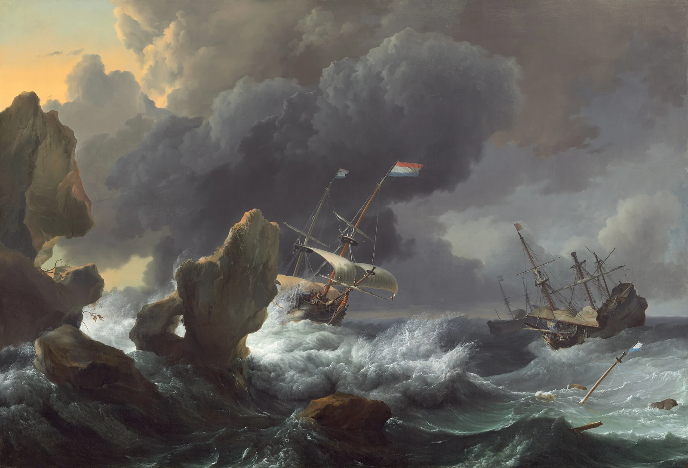
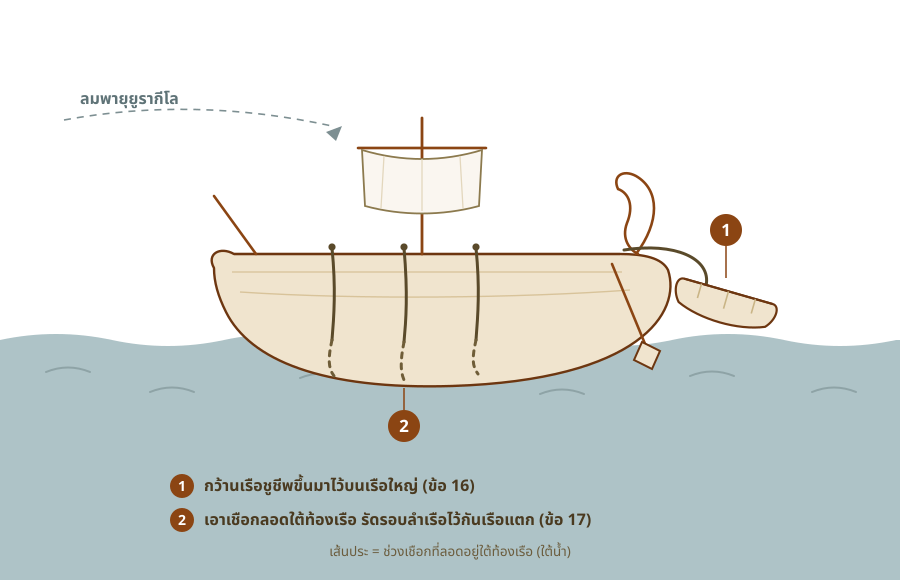
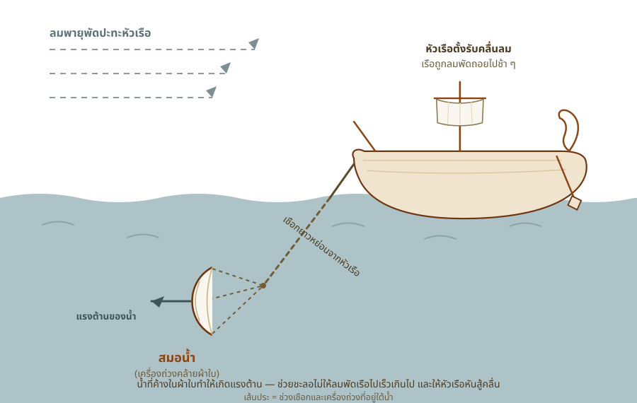

เมื่อความหวังทั้งหมดถูกพรากไป
เปาโลเตือนว่าถ้าฝืนออกเรือต่อจะเจอหายนะ แต่นายร้อยเชื่อกัปตันมากกว่า พอออกเรือได้ไม่นานก็เจอพายุยูรากีโลพัดหลายวัน จนต้องทิ้งสินค้าและเครื่องเรือลงทะเล และในที่สุดก็หมดหวังที่จะรอดชีวิต
iความหมายของเครื่องหมายในบทความ
กิจการ 27:9-20หลังจากแล่นเรือฝ่าลมมาอย่างยากลำบากจนถึงท่าจอดเล็ก ๆ แห่งหนึ่ง ทุกคนต้องตัดสินใจว่าจะพักที่นี่หรือเสี่ยงออกเรือต่อ เปาโลเตือนแล้วว่าอย่าไป แต่ไม่มีใครฟัง — และสิ่งที่ตามมาคือพายุที่ค่อย ๆ พรากทุกอย่างไปจากพวกเขาทีละอย่าง จนเหลือสิ่งสุดท้าย คือความหวังที่จะรอดชีวิต
คำเตือนที่ไม่มีใครฟัง
เรื่องเปิดฉากด้วยเวลาที่ล่วงเลยไปมาก จนการเดินเรือเริ่มอันตราย เพราะเลย “วันลบบาป” มาแล้ว[9] คำในภาษาเดิม (กรีก) ที่แปลว่าวันลบบาปคือ nēsteia (νηστεία) หรือ “วันถืออดอาหาร”1 ซึ่งเป็นเทศกาลสำคัญของยิวราวต้นเดือนตุลาคม ลูกาเอ่ยถึงมันไม่ใช่เพื่อบอกเรื่องศาสนา แต่เพื่อบอก “ฤดูกาล” — พอเลยช่วงนี้ไป ทะเลเมดิเตอร์เรเนียนจะเข้าสู่หน้ามรสุมที่อันตรายเกินกว่าจะเดินเรือ ผมเล่าเบื้องหลังของวันลบบาปว่าคือวันอะไร และทำไมจึงกลายมาเป็นหมุดบอกฤดูกาลไว้ในหน้าวันลบบาป
เปาโลเลยเตือนว่า ถ้าฝืนไปต่อจะเจอ hybris (ὕβρις) และความเสียหาย ทั้งต่อสินค้า ต่อเรือ และต่อ “ชีวิต” ของทุกคนด้วย[10] คำว่า hybris ปกติแปลว่าความหยิ่งยโสหรือการทำร้ายอย่างรุนแรง แต่มีความหมายเฉพาะอีกอย่างที่ใช้กับ “ความหายนะที่เกิดจากทะเล”2 เปาโลจึงไม่ได้พูดลอย ๆ แต่เตือนถึงภัยพิบัติกลางทะเลตรง ๆ
แต่คนที่มีอำนาจตัดสินใจไม่ได้ฟังเปาโล นายร้อยเลือกเชื่อ kybernētēs (κυβερνήτης) “กัปตันเรือ” กับเจ้าของเรือมากกว่า[11] ซึ่งก็เข้าใจได้ — คนหนึ่งเป็นผู้เชี่ยวชาญการเดินเรือ อีกคนเป็นเจ้าของเรือเอง ส่วนเปาโลเป็นแค่นักโทษที่ไม่ได้เป็นลูกเรือ พอท่างามเป็นอ่าวเล็กที่ไม่เหมาะจอดตลอดหน้าหนาว คนส่วนใหญ่ก็เลยลงความเห็นว่าควรเสี่ยงแล่นต่อไปยังเมืองฟีนิกซ์ที่มีท่าจอดดีกว่า[12]
พายุที่ชื่อยูรากีโล

ภาพวาดเรือกลางพายุ

{kind=link}
พอมีลมใต้พัดมาเบา ๆ ทุกคนก็คิดว่าได้จังหวะเหมาะแล้ว จึงถอนสมอออกเรือเลียบเกาะครีตไป[13] แต่ลมที่ดูอ่อนโยนนั่นแหละกลับเป็นตัวล่อให้พวกเขาออกไปเจอสิ่งที่ร้ายกว่า เพราะไม่นานหลังจากนั้นก็มีลมพายุหมุนพัดกวาดลงมาจากเกาะ[14] ลูกาบันทึกชื่อของมันไว้ในภาษาเดิมว่า Eurakylōn (Εὐρακύλων) เป็นชื่อเฉพาะของลมพายุจากทิศตะวันออกเฉียงเหนือ3 ที่ TCV แปลไว้ตามความหมายว่า “ลมตะวันออกเฉียงเหนือ”
พายุแรงจนเรือ “ต้านลมไม่ไหว”[15] คำในภาษาเดิมตรงนี้คือ antophthalmeō (ἀντοφθαλμέω) แปลตรงตัวว่า “มองหน้าเข้าตา” เป็นสำนวนของชาวเรือที่หมายถึงการหันหัวเรือสู้กับลม4 ลูกากำลังบอกว่าเรือลำใหญ่ลำนี้ไม่มีปัญญาแม้แต่จะหันหน้าเข้าสู้กับลมได้อีกต่อไป ทำได้อย่างเดียวคือปล่อยให้ลมพัดพาไป5
 พายุพัดเรือเปาโลจากเกาะครีตสู่เกาะคาวดา
พายุพัดเรือเปาโลจากเกาะครีตสู่เกาะคาวดา

สู้จนต้องทิ้งทุกอย่าง
จากตรงนี้ไป เหลือแค่เรื่องเดียว คือเอาตัวให้รอด ตอนแล่นผ่านเกาะเล็ก ๆ ชื่อคาวดา พวกเขา “แทบจะ” เสียเรือชูชีพไป[16] — คำว่าแทบจะตรงนี้คือคำว่า molis คำเดียวกับที่ลูกาใช้ย้ำความยากลำบากมาตั้งแต่ช่วงก่อนหน้า พอลากเรือชูชีพขึ้นมาได้ พวกเขาก็เอาเชือกลอดใต้ท้องเรือเพื่อรัดตัวเรือไว้ไม่ให้แตก[17] เพราะกลัวว่าจะไปเกยสันดอนทราย Syrtis (Σύρτις) ที่เป็นดอนทรายมรณะนอกชายฝั่งแอฟริกา6

รัดตัวเรือและกู้เรือชูชีพกลางพายุ

จากนั้นพวกเขาก็หย่อน skeuos (σκεῦος) ลง คำนี้หมายถึงเครื่องใช้หรืออุปกรณ์ของเรือ เช่น ใบเรือหรือเครื่องถ่วง — หย่อนลงเพื่อชะลอความเร็วไม่ให้เรือพุ่งไปชนดอนทราย7

สมอน้ำ (สมอลอย) ทำงานอย่างไร

แต่พายุก็ยังซัดหนักขึ้นเรื่อย ๆ วันรุ่งขึ้นพวกเขาต้องเริ่มโยนสินค้าทิ้งลงทะเล[18] และพอถึงวันที่สาม ก็ถึงขั้นทิ้ง “อุปกรณ์ประจำเรือ” ด้วยมือของตัวเอง[19] ภาพนี้สะเทือนใจอยู่เงียบ ๆ — ของที่พวกเขาออกเรือมาเพื่อจะเอาไปขาย และเครื่องใช้ประจำเรือ ตอนนี้กลายเป็นภาระที่ต้องสละทิ้งด้วยมือตัวเองทีละอย่าง เพื่อแลกกับโอกาสรอดที่ริบหรี่ลงทุกที
 เรือสินค้าโรมันบรรทุกข้าว (โมเดลจำลอง)
เรือสินค้าโรมันบรรทุกข้าว (โมเดลจำลอง)

{kind=link}
หมดหวังที่จะรอดชีวิต
แล้วเรื่องก็มาจบช่วงนี้ที่จุดต่ำที่สุด “เมื่อไม่เห็นแสงเดือนแสงตะวันมาหลายวันและพายุยังพัดกระหน่ำ ในที่สุดเราก็หมดหวังที่จะรอดชีวิต”[20]8 คำว่าหมดหวังในภาษาเดิมใช้คำที่แปลว่า “ถูกค่อย ๆ พรากออกไปจนหมด”9 ลูกาไม่ได้บอกว่าความหวังหายวับไปในพริบตา แต่มันถูกริบไปทีละนิด ๆ พร้อมกับทุกอย่างที่พวกเขาทิ้งลงทะเล จนไม่เหลืออะไรให้ยึดอีกแล้ว
ที่น่าสังเกตคือ ในทะเลยุคนั้นไม่มีเข็มทิศ นักเดินเรืออาศัยดวงอาทิตย์ตอนกลางวันและดวงดาวตอนกลางคืนบอกทิศทาง พอมองไม่เห็นทั้งดวงอาทิตย์และดวงดาวมาหลายวัน ก็เท่ากับหลงทิศไปเลย ไม่รู้ว่าตัวเองอยู่ตรงไหน กำลังลอยไปทางไหน มืดทั้งฟ้า มืดทั้งใจ นี่คือสภาพของคนที่ทำทุกอย่างเท่าที่มนุษย์จะทำได้แล้ว — สู้ลม รัดเรือ ทิ้งของ — แต่สุดท้ายก็ยังคุมอะไรไม่ได้เลย
เปาโลเตือนตั้งแต่ต้นว่าการฝืนออกเรือในช่วงปลายฤดูจะนำหายนะมาสู่ทั้งสินค้า เรือ และชีวิต แต่นายร้อยเลือกเชื่อกัปตันกับเจ้าของเรือ และเสียงส่วนใหญ่ก็อยากไปหาท่าจอดที่ดีกว่า พอลมใต้พัดมาเบา ๆ ทุกคนคิดว่าได้จังหวะ จึงออกเรือ — แล้วก็เจอพายุยูรากีโลซัดจนเรือต้านลมไม่ไหว ได้แต่ปล่อยไปตามลม พวกเขาสู้เต็มที่ ทั้งรัดตัวเรือ ทิ้งสินค้า ทิ้งเครื่องเรือลงทะเล แต่พายุก็ไม่หยุด จนไม่เห็นแสงตะวันแสงดาวที่ใช้นำทางมาหลายวัน และในที่สุดความหวังที่จะรอดก็ถูกริบไปจนหมดสิ้น ช่วงนี้ทิ้งเราไว้ที่จุดมืดที่สุด — จุดที่มนุษย์ทำสุดกำลังแล้วแต่ก็ยังช่วยตัวเองไม่ได้
สิ่งที่ผมประทับใจในวันนี้
อ่านตอนนี้จบ สิ่งที่ค้างในใจผมมากที่สุดคือความน่ากลัวของทะเล ผมเคยเป็นทหารเรือ เคยฝึกภาคทะเล เคยอยู่ในเรือที่หัวเรือมุดลงไปในคลื่น เลยพอรู้ว่ากลางทะเลตอนคลื่นลมบ้าคลั่งมันน่ากลัวแค่ไหน คนที่ไม่เคยลงเรือลึกจะนึกภาพไม่ออกเลยว่ามันบั่นทอนทั้งร่างกายและจิตใจขนาดไหน ทุกวันนี้แค่ให้ผมนั่งเรือข้ามทะเลไกล ๆ ผมยังไม่อยากไปเลย เพราะผมเมาคลื่นและรู้ว่ามันทรมานแค่ไหน
พอมองย้อนแบบนี้ ผมยิ่งทึ่งในตัวเปาโล เพราะเขาลงเรือแบบนี้มาแล้วหลายครั้ง บนเรือโบราณที่ไม่มีระบบความปลอดภัยอะไรเลย เขายอมลำบากขนาดนั้นเพื่อจะเอาข่าวประเสริฐไปให้ถึงคนที่ยังไม่รู้จักพระเจ้า เทียบกับตัวผมที่แค่ขับรถไปไกล ๆ สบาย ๆ บางทียังไม่อยากไป มันสะท้อนใจผมว่า ความรักที่เปาโลมีต่อพระเจ้าและต่อผู้คนนั้นลึกและหนักแน่นกว่าความกลัวของเขามากแค่ไหน
และประโยคสุดท้ายที่ว่า “หมดหวังที่จะรอดชีวิต” ทำให้ผมนึกถึงจอห์น นิวตัน คนที่แต่งเพลง Amazing Grace เขาเคยเป็นลูกเรือหนุ่มที่พัวพันกับการค้าทาสและไม่เชื่อพระเจ้า แล้ววันหนึ่งก็เจอพายุใหญ่กลางมหาสมุทรจนเรือเกือบจม เขาหมดหวังเหมือนคนบนเรือลำนี้ จนต้องร้องเรียกหาพระเจ้ากลางพายุ แล้วชีวิตเขาก็เปลี่ยนไปตลอดกาล ผมเลยคิดว่าจุดที่มนุษย์หมดหวังที่สุด กลับกลายเป็นจุดที่คนได้เจอพระคุณของพระเจ้าจริง ๆ ตอนที่เราไม่เหลืออะไรให้ยึดแล้ว เราถึงจะยอมปล่อยมือแล้วหันไปหาพระองค์ — และเรื่องของเปาโลกับคนบนเรือลำนี้ ก็ยังไม่จบแค่ความมืดตรงนี้
Footnotes
nēsteia (νηστεία, G3521) แปลว่า “การถืออดอาหาร” ในที่นี้หมายถึงเทศกาลถืออดอาหารในวันลบบาป (Day of Atonement) ของยิว ซึ่งตรงกับราวปลายเดือนกันยายนถึงต้นเดือนตุลาคม ลูกาใช้เป็นเครื่องหมายบอกฤดูกาลว่าเลยช่วงที่ปลอดภัยสำหรับการเดินเรือในทะเลเมดิเตอร์เรเนียนไปแล้ว — ดู BDAG หัวข้อ νηστεία↩︎
hybris (ὕβρις, G5196) โดยทั่วไปแปลว่า “ความหยิ่งยโส” หรือ “การกระทำที่รุนแรงก้าวร้าว” แต่มีความหมายเฉพาะที่ใช้กับ “ความเสียหาย/ความหายนะที่เกิดจากทะเล” ด้วย เปาโลจึงใช้คำนี้เตือนถึงภัยพิบัติกลางทะเลโดยตรง คู่กับคำว่า zēmia (ζημία, G2209) ที่แปลว่า “ความสูญเสีย” — ดู BDAG หัวข้อ ὕβρις↩︎
Eurakylōn (Εὐρακύλων, G2148) เป็นชื่อเฉพาะของลมพายุจากทิศตะวันออกเฉียงเหนือ (มาจาก Euros ลมตะวันออก + Aquilo ลมเหนือ) เป็นศัพท์ของชาวเรือ ไม่ใช่คำทั่วไป — ดู BDAG หัวข้อ Εὐρακύλων↩︎
antophthalmeō (ἀντοφθαλμέω, G503) แปลตรงตัวว่า “มองหน้าเข้าตา / มองตรงเข้าไป” เป็นสำนวนของชาวเรือที่หมายถึงการหันหัวเรือเข้าสู้กับลม (to beat up against the wind) การที่เรือ “ต้านลมไม่ไหว” จึงหมายถึงหันหน้าเข้าสู้กับลมไม่ได้อีกต่อไป — ดู BDAG หัวข้อ ἀντοφθαλμέω↩︎
ในภาษาเดิมข้อ 15 (epherometha, ἐφερόμεθα) และซ้ำอีกในข้อ 17 (epheronto, ἐφέροντο) ใช้กริยารูปถูกกระทำ (passive) ของคำว่า pherō (φέρω) — เรือและคนบนเรือ “ถูกลมพัดพาไป” คือตกเป็นฝ่ายที่ถูกกระทำ หมดอำนาจควบคุมโดยสิ้นเชิง ต่างจากคำแปลไทย “ปล่อยเรือไปตามลม” ที่ฟังเหมือนยังเลือกได้ — ดู BDAG หัวข้อ φέρω↩︎
Syrtis (Σύρτις, G4950) คือชื่อดอนทราย/สันดอนขนาดใหญ่นอกชายฝั่งทางเหนือของทวีปแอฟริกา (ลิเบีย) ที่ลือกันในหมู่ชาวเรือว่าเป็นจุดอันตรายถึงตาย เพราะเรือที่ถูกพัดไปเกยจะติดหล่มทรายและแตก — ดู BDAG หัวข้อ Σύρτις↩︎
skeuos (σκεῦος, G4632) แปลว่า “ภาชนะ เครื่องใช้ อุปกรณ์” เมื่อใช้กับเรือหมายถึงเครื่องใช้หรืออุปกรณ์การเดินเรือ (the tackle or gear of a ship) เช่น ใบเรือหรือเครื่องถ่วงชะลอความเร็ว การหย่อน skeuos ลงจึงเป็นการพยายามชะลอเรือไม่ให้ถูกลมพัดพุ่งไปเกยดอนทราย — ดู BDAG หัวข้อ σκεῦος↩︎
ในภาษาเดิมข้อนี้พูดถึง “ดวงอาทิตย์” (hēlios, ἥλιος) กับ “ดวงดาว” (astra, ἄστρα) — กลางวันชาวเรือดูดวงอาทิตย์ กลางคืนดูดวงดาวเพื่อบอกทิศ (ฉบับแปลไทยใช้คำว่า “แสงเดือนแสงตะวัน”) การมองไม่เห็นดวงดาวจึงหมายถึงหลงทิศกลางทะเล↩︎
คำว่า “หมดหวัง” ในข้อ 20 ในภาษาเดิมใช้คำกริยา periaireō (περιαιρέω, G4014) ในรูปที่สื่อถึงการ “ถูกค่อย ๆ ปลด/พรากออกไปจนหมดรอบด้าน” (รูป imperfect บอกอาการที่ค่อย ๆ เป็นไป ไม่ใช่ทันทีทันใด) เป็นภาพของความหวังที่ถูกริบไปทีละน้อยพร้อมกับทุกสิ่งที่พวกเขาสูญเสีย — ดู BDAG หัวข้อ περιαιρέω↩︎